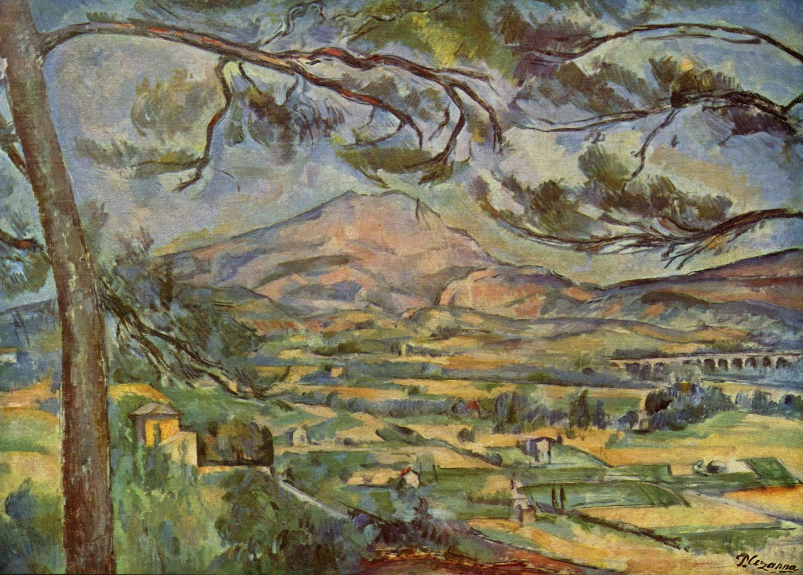

经过10年的磨合，他独创了一套独特的适合华人的咖啡调制秘方，在当地家喻户晓，被盛誉为适合华人的咖啡馆。漂波的一生，历尽苍桑。思乡的情节， 纠缠了一个世纪。最终老人未能重返故土，只好叮嘱孩子，一定要带着他和他的精良技艺回到大陆，与国人分享咖啡的苦与乐。
品牌故事
STORY1918年，中国大陆硝烟弥漫，战乱不断。一个名叫阿南的小男孩不幸被拐卖至南洋，变成了苏门答腊岛一个咖啡豆庄园的奴隶。幸运之神并没有将他抛弃，机缘巧合 下他成了庄主的救命恩人，庄主不但恢复了他的自由身并让他参与庄园的管理工作。中国人特有的勤劳和忠诚，使他有机会投身于咖啡的种植、研磨、烹煮等工艺的 研究，一晃就是三十年……
后来老庄主去世时，阿南也离开了这个伤心之地，定居在新加坡。三十年的咖啡情缘使他萌生了一个念头——开创一家咖啡馆。于是华人社区第一家手工研磨咖啡馆 研磨时光开张了！
经过10年的磨合，他独创了一套独特的适合华人的咖啡调制秘方，在当地家喻户晓，被盛誉为适合华人的咖啡馆。漂波的一生，历尽苍桑。思乡的情节， 纠缠了一个世纪。最终老人未能重返故土，只好叮嘱孩子，一定要带着他和他的精良技艺回到大陆，与国人分享咖啡的苦与乐。